Assignments
This page will contain all the assignments you submit for the class.
Assignment 1
Collaborators: Eliza Epstein.
This assignment is due on Canvas on Monday 9/20 before class, at 10:15 am. Include the name of anyone with whom you collaborated at the top of the assignment.
Problem 1
Install the datasets package on the console below using install.packages("datasets"). Now load the library.
library(datasets)Answer: I loaded the library!
Load the USArrests dataset and rename it dat. Note that this dataset comes with R, in the package datasets, so there’s no need to load data from your computer. Why is it useful to rename the dataset?
dat<-USArrestsAnswer: It is nice to rename data because we want to be able to replicate our analysis without messing up the original data.
Problem 2
Use this command to make the state names into a new variable called State.
dat$state <- tolower(rownames(USArrests))List the variables contained in the dataset USArrests.
names(dat)## [1] "Murder" "Assault" "UrbanPop" "Rape"Answer: The four variables contained in this dataset are Murder, Assault, UrbanPop and Rape.
Problem 3
What type of variable (from the DVB chapter) is Murder?
Answer: Murder is a categorical variable, according to the DVB chapter. — FALSE: It’s a quantitative variable.
What R Type of variable is it?
Answer: It is a character R Type variable. — FALSE: It’s a numeriical varable.
Problem 4
What information is contained in this dataset, in general? What do the numbers mean?
Answer: In this dataset we have the number of arrests per 100,000 residents for each of the following categories: assault, murder and rape in each of the 50 US states in 1973.
Problem 5
Draw a histogram of Murder with proper labels and title.
Answer: I chose to make a barplot instead of a histogram because it made more sense to me, considering that the data is categorical. I thought it would be clearer if each bar represented a state, which is why I decided to label the x-axis with the names of the states and the y-axis the number of arrests for murder per 100,000. In the code las=2 simply means that I wanted that state labels to be perpendicular to the x-axis.
state.names = row.names(USArrests)
barplot(USArrests$Murder, names.arg = state.names, las = 2, ylab = "Arrest Rate for murder per 100,000", main = "Murder Rate in the United States in 1973")
Problem 6
Please summarize Murder quantitatively. What are its mean and median? What is the difference between mean and median? What is a quartile, and why do you think R gives you the 1st Qu. and 3rd Qu.?
summary(dat$Murder)## Min. 1st Qu. Median Mean 3rd Qu. Max.
## 0.800 4.075 7.250 7.788 11.250 17.400Answer: Min: 0.800, 1st Q: 4.075, Median 7.250, Mean 7.788, 3rd Q 11.250, Max 17.400 —– The mean is 7.788 and the median is 7.250. On average there were 7.788 (mean) arrests for murder per 100,000 residents in each state in 1973. The median tells us where the middle of the data set is. Since the mean is higher than the median we could say the distribution or arrests for murder per 100,000 in 1973 is positively skewed. A quartile represents 1/4 of the data, for examples the 1st Q is 4.075 and this tells us that 1/4 of the data lies below 4.075 arrests per 100,000. I think R only gives us the 1st and 3rd Quartiles because the median is equal to the 2nd Quartile.
Problem 7
Repeat the same steps you followed for Murder, for the variables Assault and Rape. Now plot all three histograms together. You can do this by using the command par(mfrow=c(3,1)) and then plotting each of the three.
state.names = row.names(USArrests)
barplot(USArrests$Assault, names.arg = state.names, las = 2, ylab = "Arrest Rate for assault per 100,000", main = "Assault Rate in the United States in 1973")state.names = row.names(USArrests)
barplot(USArrests$Rape, names.arg = state.names, las = 2, ylab = "Arrest Rate for rape per 100,000", main = "Rape Rate in the United States in 1973")par(mfrow=c(3,1))
state.names = row.names(USArrests)
barplot(USArrests$Murder, names.arg = state.names, las = 2, ylab = "Arrest Rate for murder per 100,000", main = "Murder Rate in the United States in 1973")
state.names = row.names(USArrests)
barplot(USArrests$Assault, names.arg = state.names, las = 2, ylab = "Arrest Rate for assault per 100,000", main = "Assault Rate in the United States in 1973")
state.names = row.names(USArrests)
barplot(USArrests$Rape, names.arg = state.names, las = 2, ylab = "Arrest Rate for rape per 100,000", main = "Rape Rate in the United States in 1973")
What does the command par do, in your own words (you can look this up by asking R ?par)?
Answer: Par can be used to set different parameters and can allow us to create a single graph from many.
What can you learn from plotting the histograms together?
Answer: By plotting histograms together (or in this case bar charts) we can see patterns more clearly. It becomes easier to compare the rates of arrest per 100,000 residents for each category across the states.
Problem 8
In the console below (not in text), type install.packages("maps") and press Enter, and then type install.packages("ggplot2") and press Enter. This will install the packages so you can load the libraries.
Run this code:
library('maps')
library('ggplot2')
ggplot(dat, aes(map_id=state, fill=Murder)) +
geom_map(map=map_data("state")) +
expand_limits(x=map_data("state")$long, y=map_data("state")$lat)What does this code do? Explain what each line is doing.
Answer:The code allows us to make a heat map of arrests for murder per 100,000 in the USA. The first line tells R that we want to make a heat map according to states and that we want to use the data of arrests for murder to fill in each state. The second line creates the map and the last line expands the range to fit in all possible values.
\[\\[2in]\]
Assignment 2
Carolina Herrera Figueroa
CRIM250- Statistics for the Social Sciences
Assignment 2
Collaborators: Eliza Epstein.
##“/Users/carolinaherrera/Documents/Assignment 2 - CRIM 250”
dat<-read.csv("dat.nsduh.small.1.csv")summary(dat)## mjage cigage iralcage age2
## Min. : 7.00 Min. :10.00 Min. : 5.00 Min. : 4.00
## 1st Qu.:14.00 1st Qu.:15.00 1st Qu.:13.00 1st Qu.:13.00
## Median :16.00 Median :17.00 Median :15.00 Median :15.00
## Mean :15.99 Mean :17.65 Mean :14.95 Mean :13.98
## 3rd Qu.:17.50 3rd Qu.:19.00 3rd Qu.:17.00 3rd Qu.:15.00
## Max. :35.00 Max. :50.00 Max. :23.00 Max. :17.00
## sexatract speakengl irsex
## Min. : 1.00 Min. :1.00 Min. :1.000
## 1st Qu.: 1.00 1st Qu.:1.00 1st Qu.:1.000
## Median : 1.00 Median :1.00 Median :1.000
## Mean : 3.07 Mean :1.07 Mean :1.468
## 3rd Qu.: 1.00 3rd Qu.:1.00 3rd Qu.:2.000
## Max. :99.00 Max. :3.00 Max. :2.000head(dat)## mjage cigage iralcage age2 sexatract speakengl irsex
## 1 14 50 14 16 1 1 1
## 2 11 14 5 13 2 1 2
## 3 12 35 12 15 2 1 2
## 4 16 18 18 14 1 1 1
## 5 14 16 14 16 4 1 1
## 6 12 16 18 15 4 1 2names(dat)## [1] "mjage" "cigage" "iralcage" "age2" "sexatract" "speakengl"
## [7] "irsex"dim(dat)## [1] 171 7Answer:The data consists of 171 rows and 7 columns.
#Problem 2: Variables ANSWER: The variables in this data set are: mjage, cigage, iralcage, age2, sexatract, speakengl, irsex. (mjage) looks at how old the individual was the first time they used marijuana or hashish, (cigage) is have they ever smoked part of a cigarette, (iralcage) looks at how old the individual was when they first tried alcohol, (age2) represents their coded age, (irsex) represents their gender, (sexatract) looks at what best describes their sexual atractment and (speakengl) represents how well the individual speaks English. These are all categorical variables.
names(dat)## [1] "mjage" "cigage" "iralcage" "age2" "sexatract" "speakengl"
## [7] "irsex"What is this dataset about? Who collected the data, what kind of sample is it, and what was the purpose of generating the data? Answer: This dataset is about drug and alcohol use. It was collected using the National Survey of Drug Use and Health, and this is a random sample of the first 1000 cases of the survey. The purpose of generating the data was to perhaps be able to study the relationship between drug use and other variables such as age or gender. I think the results could perhaps be used to allocate resources to individuals or groups at highest risk of an early onset of drug use.
#Problem 3: Age and gender What is the age distribution of the sample like? Make sure you read the codebook to know what the variable values mean. Answer: The age distribution of the sample is skewed with most individuals being between the ages of 35-49 years old, where the peak and the mean of the data is located, as shown by Figure 1. The lowest age of a respondent was 15 years old. I think those over 65 years old are also underrepresented in the sample.
summary(dat)## mjage cigage iralcage age2
## Min. : 7.00 Min. :10.00 Min. : 5.00 Min. : 4.00
## 1st Qu.:14.00 1st Qu.:15.00 1st Qu.:13.00 1st Qu.:13.00
## Median :16.00 Median :17.00 Median :15.00 Median :15.00
## Mean :15.99 Mean :17.65 Mean :14.95 Mean :13.98
## 3rd Qu.:17.50 3rd Qu.:19.00 3rd Qu.:17.00 3rd Qu.:15.00
## Max. :35.00 Max. :50.00 Max. :23.00 Max. :17.00
## sexatract speakengl irsex
## Min. : 1.00 Min. :1.00 Min. :1.000
## 1st Qu.: 1.00 1st Qu.:1.00 1st Qu.:1.000
## Median : 1.00 Median :1.00 Median :1.000
## Mean : 3.07 Mean :1.07 Mean :1.468
## 3rd Qu.: 1.00 3rd Qu.:1.00 3rd Qu.:2.000
## Max. :99.00 Max. :3.00 Max. :2.000counts <- table(dat$age2)
barplot(counts, main = "Fig 1. Age of Participants", xlab="Code for Age")
Do you think this age distribution representative of the US population? Why or why not? ANSWER: I think this age distribution is not representative of the US population because it suggests that the population is mostly comprised of individuals between the age of 35-49 years old.
Is the sample balanced in terms of gender? If not, are there more females or males? ANSWER: The same seems to be relatively balanced in terms of gender, but there are slightly more males than females. The bar chart (Figure 2) shows us that the bar for code “1” which represents males in the codebook is taller, meaning our sample has more males.
counts <- table(dat$irsex)
barplot(counts, main = "Fig 2. Gender of Participants", xlab="Code for Gender")
Use this code to draw a stacked bar plot to view the relationship between sex and age. What can you conclude from this plot? ANSWER: This plot shows us that for most age categories an equal number of males and females were surveyed, with the exception of a few. It seems that the younger the participants were the more likely it was that the sample consisted of mostly males or mostly females, but it was not even. For example, for age categories 6 and 7, which translates to the respondents being 17 or 18 years old, the data is made up of males only. Starting at age category 11 we see a sample more evenly split among males and females.
tab.agesex <- table(dat$irsex, dat$age2)
barplot(tab.agesex,
main = "Fig 3. Relationship between Sex and Age",
xlab = "Age category", ylab = "Frequency",
legend.text = rownames(tab.agesex),
beside = FALSE) # Stacked bars (default)Problem 4: Substance use
For which of the three substances included in the dataset (marijuana, alcohol, and cigarettes) do individuals tend to use the substance earlier? Answer: Individuals tends to use alcohol earlier, it was reported being consumed as early as 16 years old, compared with 18 years old for marijuana/hashnish and 21 years old for cigarettes. We can also see that 25% of the respondents were under the age of 29 when they tried alcohol for the first time, compared to 25% being below 34 years old the first time they tried marijuana/hashish and 25% of those who respondents who were under 49 years old when theey started smoking cigarettes. Alcohol is also the only substance in our sample that respondents tried for the first time under the age of 18.
counts <- table(dat$mjage)
barplot(counts, main = "Fig 4. Age when First Used Marijuana/Hashish", xlab="Age")
counts <- table(dat$cigage)
barplot(counts, main = "Fig 5. Age when first started Smoking Cigarettes Every day", xlab="Age")counts <- table(dat$iralcage)
barplot(counts, main = "Fig 6. Age When First tried Alcohol", xlab="Age")Problem 5: Sexual attraction
What does the distribution of sexual attraction look like? Is this what you expected? ANSWER: The distribution of sexual attraction is skewed, with a great majority of individuals reporting as being attracted only to the opposite sex. I was not surprised to see such a high number of individuals reporting to be heterosexual, but rather the difference between those who reported to be heterosexual and those who reported to be homosexual. I think we should keep in mind that it’s possible that some individuals may have chosen to not report accurately out of fear of embarassment.
counts <- table(dat$sexatract)
barplot(counts, main = " Fig 7:Sexual Attraction", xlab="Code for Sexual Attraction")What is the distribution of sexual attraction by gender? Answer: The distribution of sexual attraction by gender is interesting because those who identify as strongly being heterosexual (1 on the codebook) are mostly males, while those who identify as being “mostly heterosexual” are mostly female. I thought this was interesting to see because it may be showing us the importance of the wording of the question since males were more likley to choose the option that strongly asserted their sexuality. In our sample of 1,000 individuals, those who identified as bisexual were only female. There was an even split between genders among those who identified as being attracted only to the same sex.
tab.sexatract <- table(dat$irsex, dat$sexatract)
barplot(tab.sexatract,
main = "Fig 8: Relationship between Gender and Sexual Attraction",
xlab = "Code for Sexual Attraction", ylab = "Frequency",
legend.text = rownames(tab.sexatract),
beside = FALSE) # Stacked bars (default)
Problem 6: English speaking
What does the distribution of English speaking look like in the sample? Is this what you might expect for a random sample of the US population? ANSWER: The distribution of English speaking looks very skewed in the sample, with the majority of individuals speaking English very well. The barplot shows us that over 150 individuals speak English very well while about 10 speak English not well. This is not what I would expect of a random sample of the US population, I expected to see a greater number of individuals who spoke English “well” and “not well” considering that English is not the nativie language for a great portion of the population. I didn’t expect the data to be as skewed at it is.
Are there more English speaker females or males? ANSWER: There are more English speaking males, and in our sample none fall under the category of speaking English “not well”, represented by the bar labeled “3” on our plot.
counts <- table(dat$speakengl)
barplot(counts, main = "Figure 9: How Well do Participants Speak English", xlab = "Categories")
tab.sexengl <- table(dat$irsex, dat$speakengl)
barplot(tab.sexengl,
main = "Figure 10: English Proficiency by Gender",
xlab = "Code for English Speaking", ylab = "Frequency",
legend.text = rownames(tab.sexengl),
beside = FALSE) # Stacked bars (default)Exam 1
dat<-read.csv("fatal-police-shootings-data.csv")Problem 1 (10 points)
- Describe the dataset. This is the source: https://github.com/washingtonpost/data-police-shootings . Write two sentences (max.) about this.
This dataset describes every fatal shooting in the United States since January 1, 2015 by a police officer on the line of duty. It tracks different variables about the circumstances of the shooting including if the victim was armed or not.
- How many observations are there in the data frame?
dim(dat)## [1] 6594 17The data consists of 6594 rows and 17 columns..
- Look at the names of the variables in the data frame. Describe what “body_camera”, “flee”, and “armed” represent, according to the codebook. Again, only write one sentence (max) per variable.
names(dat)## [1] "id" "name"
## [3] "date" "manner_of_death"
## [5] "armed" "age"
## [7] "gender" "race"
## [9] "city" "state"
## [11] "signs_of_mental_illness" "threat_level"
## [13] "flee" "body_camera"
## [15] "longitude" "latitude"
## [17] "is_geocoding_exact"The variable “body_camera” looks at whether news reports indicate that a officer was wearing a body camera and if it possibly recorded some part of the incident.“flee” looks at whether news reports indicate that the victim was moving away from the officers and there are three possible responses: “by foot”, “car” or “not fleeing”. “Armed” looks at whether the victim was armed with some sort of artifact that a police officer believed could inflict harm, the possible responses are that this is “undetermined”, “unknown” or the victim was “unarmed”.
- What are three weapons that you are surprised to find in the “armed” variable? Make a table of the values in “armed” to see the options.
table(dat$armed)##
## air conditioner
## 207 1
## air pistol Airsoft pistol
## 1 3
## ax barstool
## 24 1
## baseball bat baseball bat and bottle
## 20 1
## baseball bat and fireplace poker baseball bat and knife
## 1 1
## baton BB gun
## 6 15
## BB gun and vehicle bean-bag gun
## 1 1
## beer bottle binoculars
## 3 1
## blunt object bottle
## 5 1
## bow and arrow box cutter
## 1 13
## brick car, knife and mace
## 2 1
## carjack chain
## 1 3
## chain saw chainsaw
## 2 1
## chair claimed to be armed
## 4 1
## contractor's level cordless drill
## 1 1
## crossbow crowbar
## 9 5
## fireworks flagpole
## 1 1
## flashlight garden tool
## 2 2
## glass shard grenade
## 4 1
## gun gun and car
## 3798 12
## gun and knife gun and machete
## 22 3
## gun and sword gun and vehicle
## 1 17
## guns and explosives hammer
## 3 18
## hand torch hatchet
## 1 14
## hatchet and gun ice pick
## 2 1
## incendiary device knife
## 2 955
## knife and vehicle lawn mower blade
## 1 2
## machete machete and gun
## 51 1
## meat cleaver metal hand tool
## 6 2
## metal object metal pipe
## 5 16
## metal pole metal rake
## 4 1
## metal stick microphone
## 3 1
## motorcycle nail gun
## 1 1
## oar pellet gun
## 1 3
## pen pepper spray
## 1 2
## pick-axe piece of wood
## 4 7
## pipe pitchfork
## 7 2
## pole pole and knife
## 3 2
## railroad spikes rock
## 1 7
## samurai sword scissors
## 4 9
## screwdriver sharp object
## 16 14
## shovel spear
## 7 2
## stapler straight edge razor
## 1 5
## sword Taser
## 23 34
## tire iron toy weapon
## 4 226
## unarmed undetermined
## 421 188
## unknown weapon vehicle
## 82 213
## vehicle and gun vehicle and machete
## 8 1
## walking stick wasp spray
## 1 1
## wrench
## 1Three weapons that surprised me in the “armed” variable are pen, wasp spray, and chainsaw.
Problem 2 (10 points)
- Describe the age distribution of the sample. Is this what you would expect to see?
hist(dat$age, main="Fig 1. Histogram of age of Victims", xlab="Years", ylab="Frequency")The age distribution of the sample is what is would have expected to see. Looking at figure 1 we can see that a great portion of the victims are between the age of 30-35. Usually people between this age are more likely to be involved in interactions with the police. For example, I wasn’t expecting a large number of victims to be either under the age of 20, nor over the age of 45 and the histogram shows that to be true. The distribution is also unimodal and positvely skewed to the right.
- To understand the center of the age distribution, would you use a mean or a median, and why? Find the one you picked.
summary(dat$age)## Min. 1st Qu. Median Mean 3rd Qu. Max. NA's
## 6.00 27.00 35.00 37.12 45.00 91.00 308To understand the center of the age distribution I would use a median because it is resistant to values that are extremely large or small. Since the data is skewed to the right our mean would also be pulled to the right, giving us a number that does not represent the true center of the distribution. The median of the age distribution is 35 years old, meaning that the center of our data is located here.
- Describe the gender distribution of the sample. Do you find this surprising?
counts <- table(dat$gender)
barplot(counts, main = "Fig 2. Gender of Victim", xlab="Sex")
Figure 2 shows us that most of the victims were male, with a very small number identifying as female. I don’t find this surprising because usually when we hear about fatal police shootings the victims are always male. This could be either because they are more likley to put up a fight and resist to an arrest or because they are more likely to be stopped in the first place. The first very small bar in our chart signifies that the gender of the victim is unknown.
Problem 3 (10 points)
- How many police officers had a body camera, according to news reports? What proportion is this of all the incidents in the data? Are you surprised that it is so high or low?
table(dat$body_camera)##
## False True
## 5684 910According to news reports 910 police officers had a body camera. 910/6594 – Only in 13.8% of all incidents in the data police officers has a body camera. I found this to actually be very surprising considering the number of states that are requiring their officers to wear body cameras. I think it possible that a portion of these deadly shootings could have been prevented if more officers were required to wear these cameras, because they create a sense of responsibility. There is no way to lie about the circumstances of a deadly shooting if there is videographic evidence of what occurred.
- In how many of the incidents was the victim fleeing? What proportion is this of the total number of incidents in the data? Is this what you would expect?
table(dat$flee)##
## Car Foot Not fleeing Other
## 491 1058 845 3952 248The victim was fleeing in 1903 of the incidents, 1058 by car and 845 by foot. There are 491 missing values in this dataset, if we include those in the calculation, the victim was fleeing in 1903/6594 – 28.85% of the cases. If we do not include the missing values, the victim was fleeing in 31.18% of cases. This is not what I expected because it shows that the police officer did not have much reason to shoot the victim in a fatal way. If the individual isn’t fleeing then they are most likely not a source of imminent danger to the public, meaning there must be another way to get control over them. I would have expected the proportion of victims fleeing to be at least 50%.
Problem 4 (10 points) - Answer only one of these (a or b).
- Describe the relationship between the variables “body camera” and “flee” using a stacked barplot. What can you conclude from this relationship?
Hint 1: The categories along the x-axis are the options for “flee”, each bar contains information about whether the police officer had a body camera (vertically), and the height along the y-axis shows the frequency of that category).
Hint 2: Also, if you are unsure about the syntax for barplot, run ?barplot in R and see some examples at the bottom of the documentation. This is usually a good way to look up the syntax of R code. You can also Google it.
tab.agesex <- table(dat$body_camera, dat$flee)
barplot(tab.agesex,
main = "Fig 3. Relationship between Body Camera and Flee",
xlab = "Victim fleeing", ylab = "Frequency",
legend.text = rownames(tab.agesex),
beside = FALSE) # Stacked bars (default)Figure 3 first shows us that most of the victims were not fleeing. Secondly, it shows us that more police officers were wearing cameras when the victim was not fleeing compared to when they were. I wouldn’t exactly say that there is an association between the two considering that police officers probably cannot take off their body cameras in the middle of their shift simply because it is convenient for the situation. I do think it’s off to see how in how many of these fatal shootings there is actual video evidence of what happened. The first bar in our plot is unlabeled in the dataset, so we are unsure of what that represents. There is also an “other” category where we see a small percentage of body cameras being used. I think this leaves a lot to think about because we don’t know if people in this category were fleeing or if there actions were open to ambiguity. This sort of makes me question the rest of the data and why some things aren’t specifically described or how were circumstances categorized. But overall, we can conclude that in our data more police officers were wearing body cameras that may have recoded part of the incident when the victim was not fleeing compared to when they were fleeing.
- Describe the relationship between age and race by using a boxplot. What can you conclude from this relationship?
Hint 1: The categories along the x-axis are the race categories and the height along the y-axis is age.
Hint 2: Also, if you are unsure about the syntax for boxplot, run ?boxplot in R and see some examples at the bottom of the documentation. This is usually a good way to look up the syntax of R code. You can also Google it.
Your answer here.
Extra credit (10 points)
- What does this code tell us?
mydates <- as.Date(dat$date)
head(mydates)
(mydates[length(mydates)] - mydates[1])This code tells us the number of days that have passed since the first data point was collected. 2458 days have passed since January 1, 2015.
On Friday, a new report was published that was described as follows by The Guardian: “More than half of US police killings are mislabelled or not reported, study finds.” Without reading this article now (due to limited time), why do you think police killings might be mislabelled or underreported? I think some police killings might not be reported because it is unconvenient for the officer and the city. Perhaps it can affect their budget and how they are viewed by the public. The lack of body cameras also makes this more possible since we don’t have video evidence to prove exactly how the situation occurred.
Regarding missing values in problem 4, do you see any? If so, do you think that’s all that’s missing from the data?
Assignment 3
Due date: Wednesday 10/27/2021 before class.
library(readr)
dat.crime <- read_delim("http://www.andrew.cmu.edu/user/achoulde/94842/data/crime_simple.txt", delim = "\t")This is a dataset from a textbook by Brian S. Everitt about crime in the US in 1960. The data originate from the Uniform Crime Report of the FBI and other government sources. The data for 47 states of the USA are given.
Here is the codebook:
R: Crime rate: # of offenses reported to police per million population
Age: The number of males of age 14-24 per 1000 population
S: Indicator variable for Southern states (0 = No, 1 = Yes)
Ed: Mean of years of schooling x 10 for persons of age 25 or older
Ex0: 1960 per capita expenditure on police by state and local government
Ex1: 1959 per capita expenditure on police by state and local government
LF: Labor force participation rate per 1000 civilian urban males age 14-24
M: The number of males per 1000 females
N: State population size in hundred thousands
NW: The number of non-whites per 1000 population
U1: Unemployment rate of urban males per 1000 of age 14-24
U2: Unemployment rate of urban males per 1000 of age 35-39
W: Median value of transferable goods and assets or family income in tens of $
X: The number of families per 1000 earning below 1/2 the median income
We are interested in checking whether the reported crime rate (# of offenses reported to police per million population) and the average education (mean number of years of schooling for persons of age 25 or older) are related.
- How many observations are there in the dataset? To what does each observation correspond?
dim(dat.crime)## [1] 47 14head(dat.crime)## # A tibble: 6 × 14
## R Age S Ed Ex0 Ex1 LF M N NW U1 U2 W
## <dbl> <dbl> <dbl> <dbl> <dbl> <dbl> <dbl> <dbl> <dbl> <dbl> <dbl> <dbl> <dbl>
## 1 79.1 151 1 91 58 56 510 950 33 301 108 41 394
## 2 164. 143 0 113 103 95 583 1012 13 102 96 36 557
## 3 57.8 142 1 89 45 44 533 969 18 219 94 33 318
## 4 197. 136 0 121 149 141 577 994 157 80 102 39 673
## 5 123. 141 0 121 109 101 591 985 18 30 91 20 578
## 6 68.2 121 0 110 118 115 547 964 25 44 84 29 689
## # … with 1 more variable: X <dbl>In the dataset there are 47 rows and 14 columns. The 14 columns correspond to the statistics of 14 different variables that were looked at, from unemployment rate to state population size and crime rate. Each row corresponds to 1 of the 47 states for which data was collected.
- Draw a scatterplot of the two variables. Calculate the correlation between the two variables. Can you come up with an explanation for this relationship?
library(datasets)
plot(dat.crime$Ed, dat.crime$R, main= "Relationship between Average Education and Reported Crime Rate",
xlab = "Average Education", ylab= "Reported Crime Rate")cor(dat.crime$Ed, dat.crime$R)## [1] 0.3228349I would say that there appears to be a weak positive relationship between average education and reported crime rate.The correlation between average education and reported crime rate is 0.3228, which is greater than 0 but still relatively small.
- Regress reported crime rate (y) on average education (x) and call this linear model
crime.lmand write the summary of the regression by using this code, which makes it look a little nicer{r, eval=FALSE} kable(summary(crime.lm)$coef, digits = 2).
crime.lm <-lm(formula = R ~ Ed, data=dat.crime)summary(crime.lm)##
## Call:
## lm(formula = R ~ Ed, data = dat.crime)
##
## Residuals:
## Min 1Q Median 3Q Max
## -60.061 -27.125 -4.654 17.133 91.646
##
## Coefficients:
## Estimate Std. Error t value Pr(>|t|)
## (Intercept) -27.3967 51.8104 -0.529 0.5996
## Ed 1.1161 0.4878 2.288 0.0269 *
## ---
## Signif. codes: 0 '***' 0.001 '**' 0.01 '*' 0.05 '.' 0.1 ' ' 1
##
## Residual standard error: 37.01 on 45 degrees of freedom
## Multiple R-squared: 0.1042, Adjusted R-squared: 0.08432
## F-statistic: 5.236 on 1 and 45 DF, p-value: 0.02688- Are the four assumptions of linear regression satisfied? To answer this, draw the relevant plots. (Write a maximum of one sentence per assumption.)
plot(dat.crime$Ed, crime.lm$residuals, ylim=c(-15,15), main= "Residuals vs. x", xlab= "x, Average education", ylab = "Residuals")
abline (h=0, lty="dashed")plot(crime.lm, which=1)The scatterplot for residuals vs x does not have any pattern surrounding the dashed line, thus the linearity assumption is satisfied.
Looking at the Residuals vs x plot above, there are no patterns or clumping which would suggest failure of independence, thus the independence assumption is satisfied.
plot(crime.lm, which=3)
The Equal Variance Assumption is also satisfied since there are no significant trends on the red line of the plot and it is pretty flat, we also don’t have that many data poits.
plot(crime.lm, which=2)
The Normal Population Assumption is not fully satisfied because the Q-Q plot does have tails, between -2 and -1, and 1 and 2.
- Is the relationship between reported crime and average education statistically significant? Report the estimated coefficient of the slope, the standard error, and the p-value. What does it mean for the relationship to be statistically significant?
The estimated coefficient of the slope is 1.116, the standard error is 0.4878 and the p-value is 0.0268. Using a significance level of 0.05, the relationship between reported crime and average education is statistically significant because the p-value is smaller than 0.05. Since the relationship is statistically significant we can reject the null hypothesis in favor of the alternative hypothesis, which is that average education and reported crime rate are related. We also have evidence to say that this relationship is not due to chance.
- How are reported crime and average education related? In other words, for every unit increase in average education, how does reported crime rate change (per million) per state?
For every unit increase in education the reported crime rate increases by 1.116 reports per million per state.
- Can you conclude that if individuals were to receive more education, then crime will be reported more often? Why or why not?
Even though the relationship found above was statistically significant I would not conclude that if individuals were to receive more education that crime would be reported more often. We cannot establish a causal relationship between the two, but the model does allow us to make inferences about our population.
Exam 2
Problem 1: EDA (10 points)
Describe the dataset and variables. Perform exploratory data analysis for the two variables of interest: funds and po.brut.
dat <- read.csv("sim.data.csv")dim(dat)## [1] 200 3head(dat)## po.dept.code funds po.brut
## 1 1 48.1 23
## 2 2 81.4 10
## 3 3 41.8 25
## 4 4 61.7 19
## 5 5 86.4 8
## 6 6 51.6 22library(datasets)
plot(dat$funds, dat$po.brut, main= "Relationship between Funds and Reported Incidents of Police Brutality",
xlab = "Funds", ylab= "Reported Incidents of Police Brutality")summary(dat$funds)## Min. 1st Qu. Median Mean 3rd Qu. Max.
## 21.40 51.67 59.75 61.04 72.17 99.70summary(dat$po.brut)## Min. 1st Qu. Median Mean 3rd Qu. Max.
## 0.00 14.00 19.00 18.14 22.00 29.00There are 200 rows and 3 columns in the dataset. The varibles we have are the police department code (po.dept.code), the amount of funding received by the police department that year in millions of dollars (funds) and the number of incidents of police brutality reported by the department that year (po.brut). The average number of incidents of police brutality is 18.14, and the maximum is 29. The average amount of funds received by a police department that year was 61.04 million dollars. In the scatterplot of the relationship between the variables we can see that there is a curve and also has somewhat of a direction. I would say that there appears to be strong negative relationship between funds and reported incidents of police brutality.
Problem 2: Linear regression (30 points)
- Perform a simple linear regression to answer the question of interest. To do this, name your linear model “reg.output” and write the summary of the regression by using “summary(reg.output)”.
# Remember to remove eval=FALSE!!
reg.output <- lm(formula = po.brut ~ funds, data=dat)summary(reg.output)##
## Call:
## lm(formula = po.brut ~ funds, data = dat)
##
## Residuals:
## Min 1Q Median 3Q Max
## -3.9433 -0.2233 0.2544 0.5952 1.1803
##
## Coefficients:
## Estimate Std. Error t value Pr(>|t|)
## (Intercept) 40.543069 0.282503 143.51 <2e-16 ***
## funds -0.367099 0.004496 -81.64 <2e-16 ***
## ---
## Signif. codes: 0 '***' 0.001 '**' 0.01 '*' 0.05 '.' 0.1 ' ' 1
##
## Residual standard error: 0.9464 on 198 degrees of freedom
## Multiple R-squared: 0.9712, Adjusted R-squared: 0.971
## F-statistic: 6666 on 1 and 198 DF, p-value: < 2.2e-16- Report the estimated coefficient, standard error, and p-value of the slope. Is the relationship between funds and incidents statistically significant? Explain.
The estimated coefficient is -0.3670, the standard error is 0.0044, and the p-value is 2.2e-16. The slope tells us that an increase of 1 unit in police department funds decreases reported incidents of police brutality by 0.3670 units. Using a significance level of 0.05, the relationship between funds and incidents is statiscally significant because a p-value of 2.2e-16 is much smaller than the significance level (0.05).
- Draw a scatterplot of po.brut (y-axis) and funds (x-axis). Right below your plot command, use abline to draw the fitted regression line, like this:
# Remember to remove eval=FALSE!!
library(datasets)
plot(dat$funds, dat$po.brut, main= "Relationship between Funds and Reported Incidents of Police Brutality", xlab= "Police Funds", ylab = "Reported Incidents of Police Brutality")
abline(reg.output, col = "red", lwd=2)Does the line look like a good fit? Why or why not?
The line looks like it would be a good fit to our data because mostly all of the datapoints on the line, and it appears to contain most of our data.
- Are the four assumptions of linear regression satisfied? To answer this, draw the relevant plots. (Write a maximum of one sentence per assumption.) If not, what might you try to do to improve this (if you had more time)?
plot(dat$funds, reg.output$residuals, ylim=c(-5,5), main= "Residuals vs. x", xlab= "x, Police Funds", ylab = "Residuals")
abline (h=0, lty="dashed")The scatterplot for residuals vs. x clearly has a curved pattern around the dashed line - thus the linearity assumption is not satisfied. I would try to use a different model to try to fix this error.
plot(reg.output, which=1)
Looking at the Residuals vs x plot, there are patterns which are not random, suggesting failure of independence, thus the independence assumption is not satisfied.If I had more time I would tranform the variables, either using log or other options.
plot(reg.output, which=3)Here the line is not mostly flat, instead we see it curve upwards on both ends. The residuals are also not randomly scatted around the red line, thus the Equal Variance Assumption is not satisfied.We can use al aternattive statistic to determine if we actually have statistical significance.
plot(reg.output, which=2)
The Normal Population Assumption is not satisfied because the Q-Q plot appears to have a left skew, we should be cautious about our conclusions. To improve this I would increase the size of the population.
- Answer the question of interest based on your analysis.
I would say that even though the initial scatterplot shows that there is a strong negative relationship between funds and reported incidents of police brutality we must consider the assumptions. None of the 4 assumptions - Linearity, Independece, Equal Variance or Normal Population are satisfied, and thus I would be cautious with stating that there is an association between the variables, even if there appears to be a statistically significant relationship (based on the p-value). Overall, based on our analysis I would say that since the assumptions are not satisfied we cannot conclude that having more funding would lead to fewer incidents of police brutality. Perhaps a different model would yield more conclusive results about the relationship between the two variables of interest.
Problem 3: Data ethics (10 points)
Describe the dataset. Considering our lecture on data ethics, what concerns do you have about the dataset? Once you perform your analysis to answer the question of interest using this dataset, what concerns might you have about the results?
In the dataset it appears that the areas with the highest police funding do indeed have the lowest number of reported incidents of police brutality. I think we must consider a possibility of bias in police recording of the data. The police departments with large funds may not want to report every incident of brutality to avoid being presented in a negative light to the public. There might exist an external variable that we didn’t analyze here that might be affecting the number of reported incidents of police brutality, such as the race or ethnicity of the officers in certain departments. We don’t have this data, but in the future it would be interesting to analyze if there is an association between race and incidents of brutality. If someone was to use the results from this dataset I think it is possible that they may reinforce the biases presented in the data, rather than trying to correct them. Furthermore, underfunded police departments are usually those in low-income neighborhoods and it is possible that people may assume that it is the individuals in the population who are at fault for the rates of brutality.
Assignment 4
#Carolina Herrera Figueroa #CRIM 250
library(tidyverse)This is to laod the package tidyverse, which is used for data analysis. We want to answer the question: what does the relationship between engine size and fuel efficiency look like?
ggplot2::mpg## # A tibble: 234 × 11
## manufacturer model displ year cyl trans drv cty hwy fl class
## <chr> <chr> <dbl> <int> <int> <chr> <chr> <int> <int> <chr> <chr>
## 1 audi a4 1.8 1999 4 auto… f 18 29 p comp…
## 2 audi a4 1.8 1999 4 manu… f 21 29 p comp…
## 3 audi a4 2 2008 4 manu… f 20 31 p comp…
## 4 audi a4 2 2008 4 auto… f 21 30 p comp…
## 5 audi a4 2.8 1999 6 auto… f 16 26 p comp…
## 6 audi a4 2.8 1999 6 manu… f 18 26 p comp…
## 7 audi a4 3.1 2008 6 auto… f 18 27 p comp…
## 8 audi a4 quattro 1.8 1999 4 manu… 4 18 26 p comp…
## 9 audi a4 quattro 1.8 1999 4 auto… 4 16 25 p comp…
## 10 audi a4 quattro 2 2008 4 manu… 4 20 28 p comp…
## # … with 224 more rowsThe dataframe we are using to answer our question is mpg.
ggplot(data = mpg) +
geom_point(mapping = aes(x = displ, y = hwy))
Running the code above helps us create a plot of the variables (displ) on the x-axis and (hwy) on the y-axis Plot shows a negative relationship between enginne size (displ) and fuel efficiency (hwy)
ggplot(data = mpg) +
DOES NOT WORK – ERROR
ggplot(data = mpg)
ggplot(data = mpg) +
geom_point(mapping = aes(x = displ, y = hwy, color = class))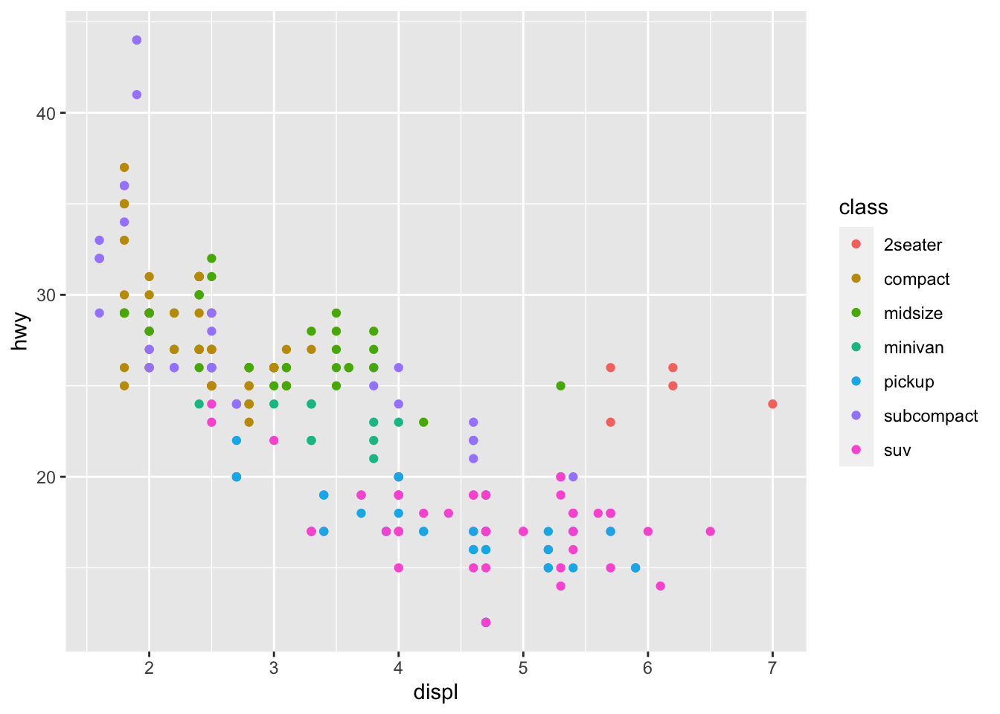
(geom_point) is used to create scatterplots, (aes) means we want to make an aesthetic, the x and y variables remain the same, but by writing color=class we can map the colors of the points to the class variable to show us the class of each car. ggplot2 automatically assigns a unique color to each unique value (in this case class) of the variable.
ggplot(data = mpg) +
geom_point(mapping = aes(x = displ, y = hwy, size = class))Here we are running the same plot as before, the only difference is that instead of mapping class to the color aesthetic, we are mapping it to the size aesthetic – thus why we see the different sizes in the points.
ggplot(data = mpg) +
geom_point(mapping = aes(x = displ, y = hwy, alpha = class))
Here we are now mapping class to the alpha aesthetic – which controls the transparency of the points.
ggplot(data = mpg) +
geom_point(mapping = aes(x = displ, y = hwy, shape = class))
This plot instead maps class to the shape aesthetic - giving unique values a unique shape. Important note! only 6 shapes are used at a time, all other groups will be unplotted.
ggplot(data = mpg) +
geom_point(mapping = aes(x = displ, y = hwy), color = "blue")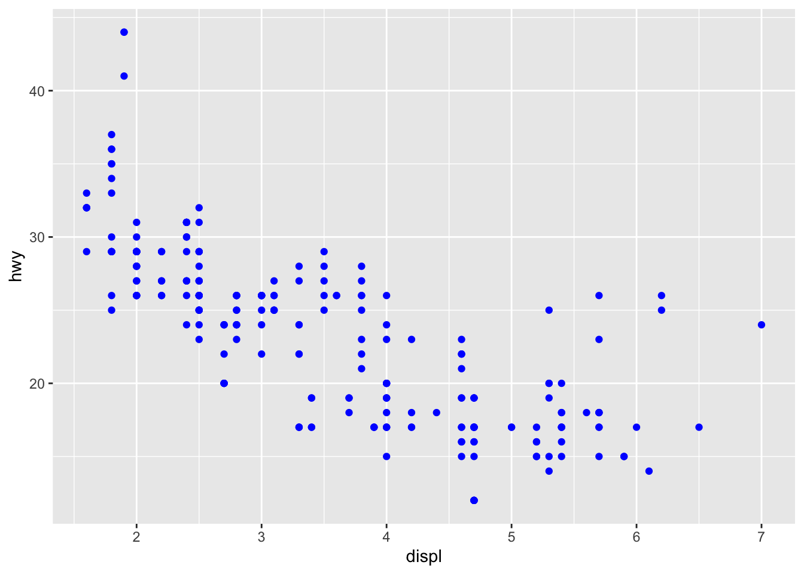
Here we are setting the colors of all the points to blue, just for a visually appealing plot, not for extra information.Note how the last part of the code is written slightly different, with a closed parentheses after the y-variable.
ggplot(data = mpg) +
geom_point(mapping = aes(x = displ, y = hwy, color = "blue"))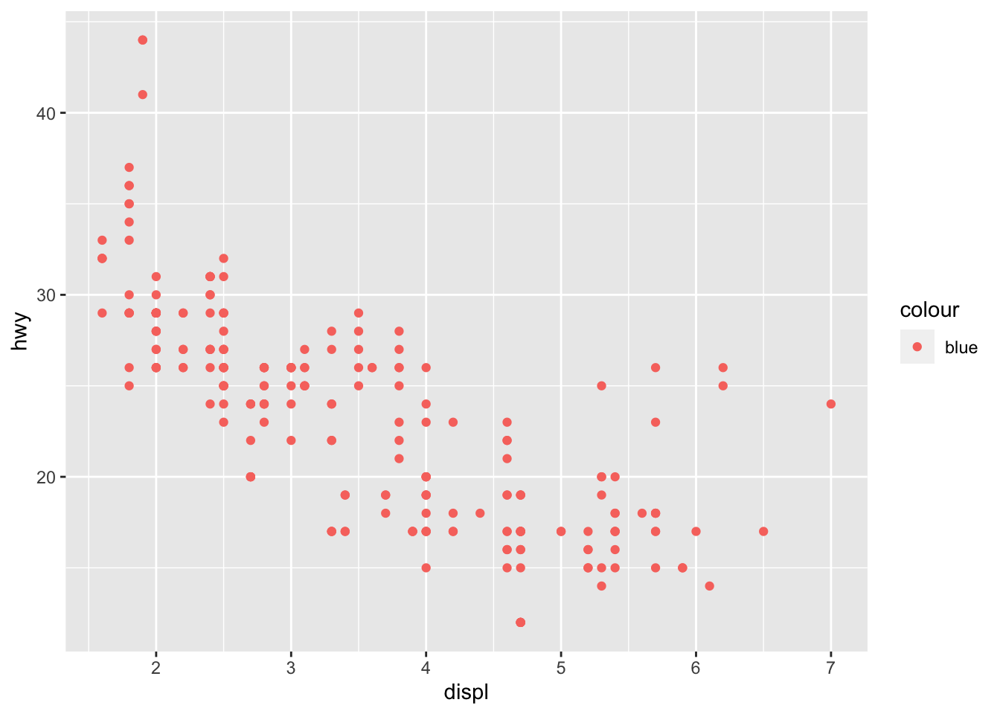
This code would indeed not give us blue points, but instead red points with a label titled “blue” as if the name of the variable was “blue”
ggplot(data = mpg) +
geom_point(mapping = aes(x = displ, y = hwy, color = displ < 5))(color=displ <5) causes color to appear on the scatterplot for values under 5, or whatever number we specify instead of 5
TROUBLESHOOTING
ggplot(data = mpg) + geom_point(mapping = aes(x = displ, y = hwy)) This will not work. The + must be at end of the first line, not at the beginning of the second.
Facets - we can split our plot into facets which are subplots that display each one subset of the data
ggplot(data = mpg) +
geom_point(mapping = aes(x = displ, y = hwy)) +
facet_wrap(~ class, nrow = 2)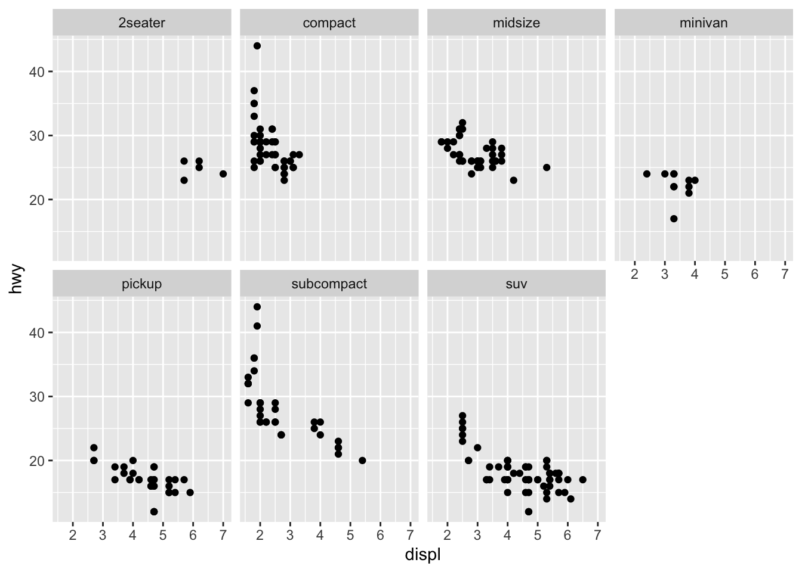
facet_wrap() allows us to plot by a single variable. Inside the parentheses we write (“~” followed by a variable name, in our case “class”). The variable should be discrete. (nrow) allows us to change how many rows of plots we want, if we have 6 plots we can do 2 rows each with 3 plots, or 3 rows each with 2 plots.
ggplot(data = mpg) +
geom_point(mapping = aes(x = displ, y = hwy)) +
facet_grid(drv ~ cyl)
facet_grid() allows us to facet the plot on the combination of two variables.There must be two variables separated by a (~)
ggplot(data = mpg) +
geom_point(mapping = aes(x = displ, y = hwy)) +
facet_grid(.~ cyl)
Using a period (.) instead of a variable name will not facet among the columns.
ggplot(data = mpg) +
geom_point(mapping = aes(x = displ, y = hwy)) +
facet_grid(drv ~ .)
Having the variable first and then the (.) means we will not facet among rows.
Note: when using facet_grid() we should usually put the variable with more unique levels in the column.
Note: Geom is the geometrical object that a plot uses to represent data – can be bar geoms, line geoms, boxplot geoms, point geoms, etc.
ggplot(data = mpg) +
geom_smooth(mapping = aes(x = displ, y = hwy))
geom_smooth gives us a sort of smooth line that is fitted to the data.
ggplot(data = mpg) +
geom_smooth(mapping = aes(x = displ, y = hwy, linetype = drv))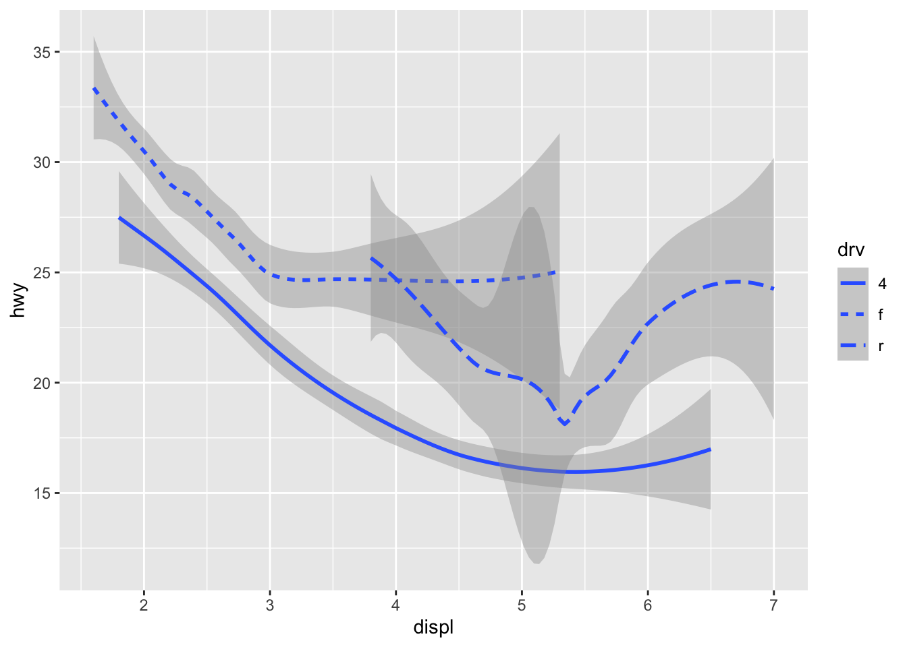
linetype allows us to set a different type of line for each unique variable that we are plotting. setting (linetype=drv) separates the cars into 3 lines based on their drv value, which describes a car’s drivetrain.
ggplot(data = mpg) +
geom_smooth(mapping = aes(x = displ, y = hwy))
ggplot(data = mpg) +
geom_smooth(mapping = aes(x = displ, y = hwy, group = drv))
ggplot(data = mpg) +
geom_smooth(
mapping = aes(x = displ, y = hwy, color = drv),
show.legend = FALSE
)
Plotting it like above allows ggplot2 to draw a separate object for each unique value of the grouping variable. We get 3 different plots without a legend. I’m not exactly sure why we would use this though
ggplot(data = mpg) +
geom_point(mapping = aes(x = displ, y = hwy)) +
geom_smooth(mapping = aes(x = displ, y = hwy))
Here we are plotting multiple geoms in the same plot, we added the function of geom_point and geom_smooth - meaning that we have both a scatterplot and the smooth line that fits the data.
ggplot(data = mpg, mapping = aes(x = displ, y = hwy)) +
geom_point() +
geom_smooth()
This code is equivalent to the one above but it’s very useful because if we want to change the y-axis to display a different variable we’d have to change it into two places, but like this it simplifies the process for us. It reduces the possibility that we will make errors in our code.
ggplot(data = mpg, mapping = aes(x = displ, y = hwy)) +
geom_point(mapping = aes(color = class)) +
geom_smooth()
We can display different aesthetic in different layers because ggplot2 treats the place mappings as local mappings for the layer. In this case we are mapping class to the color aesthetic only for the point geom.
ggplot(data = mpg, mapping = aes(x = displ, y = hwy)) +
geom_point(mapping = aes(color = class)) +
geom_smooth(data = filter(mpg, class == "subcompact"), se = FALSE)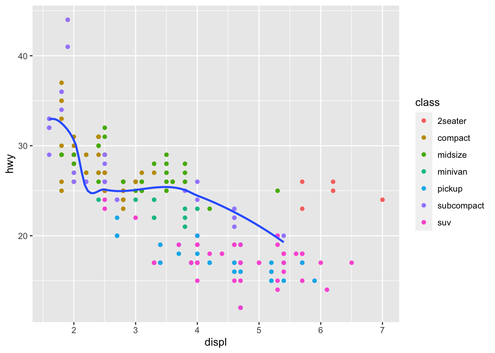
We can also specify different data for each layer. The smoothline displays just a subset of the mpg dataset, the subcompact car cars. If we wanted to look only at the minivan cars, we would change it to (class == “minivan”) What does se mean?
Statistical Transformations
ggplot(data = diamonds) +
geom_bar(mapping = aes(x = cut))
geom_bar draws a bar plot, here the x-axis displays the variable “cut” (from the diamonds dataset) and on the y-axis it displays count which is calculated by the bar chart.
ggplot(data = diamonds) +
stat_count(mapping = aes(x = cut))
Note: algorithm to calculate new values for a graph is called stat – geom_bar() uses stat_count(). This shows that sometimes we can use geom_bar() and stat_count() interchangeably
demo <- tribble(
~cut, ~freq,
"Fair", 1610,
"Good", 4906,
"Very Good", 12082,
"Premium", 13791,
"Ideal", 21551
)
ggplot(data = demo) +
geom_bar(mapping = aes(x = cut, y = freq), stat = "identity")
With this code we can override the default stat, from count to identity. Identity maps the height of the bars to the raw values of a y variable.
ggplot(data = diamonds) +
geom_bar(mapping = aes(x = cut, y = stat(prop), group = 1))
y= stat(prop) allows us display a bar chart of proportion, instead of count.
ggplot(data = diamonds) +
stat_summary(
mapping = aes(x = cut, y = depth),
fun.min = min,
fun.max = max,
fun = median
)
the stat_summary() function summarises the y values for each unique x value
ggplot(data = diamonds) +
geom_bar(mapping = aes(x = cut, colour = cut))
The (colour = cut) part code colors the outside of bars, as an outline.
ggplot(data = diamonds) +
geom_bar(mapping = aes(x = cut, fill = cut))
The (fill = cut) part of the code fills the bars with color.
ggplot(data = diamonds) +
geom_bar(mapping = aes(x = cut, fill = clarity))
If we change the variable that we are mapping the fill aesthetic to, in this case “clarity” the bars become automatically stacked. Each colored rectangle represents a combination of cut and clarity.
ggplot(data = diamonds) +
geom_bar(mapping = aes(x = cut, fill = clarity), position = "fill")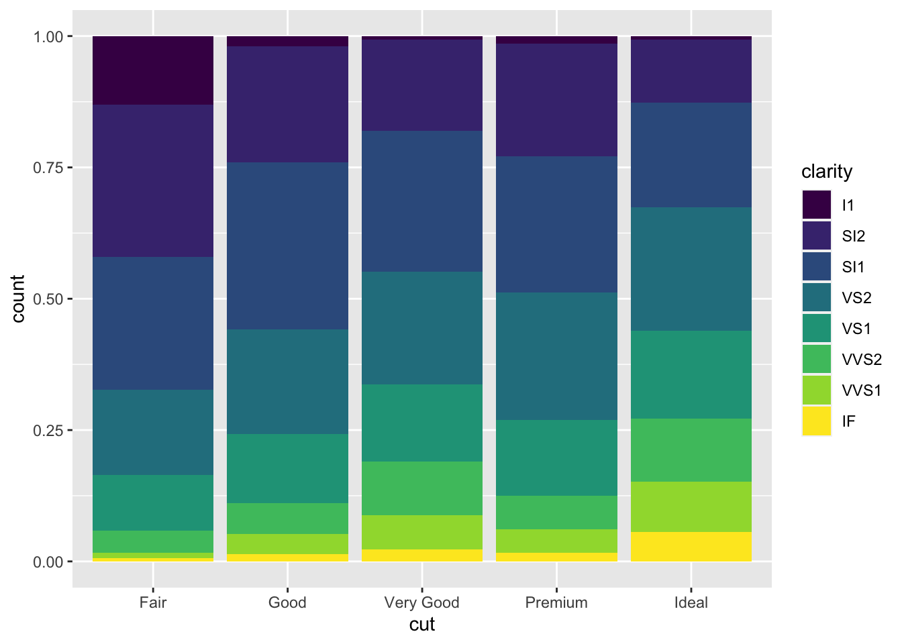
position = “fill” is useful because it makes each set of stacked bars the same height, making it easier to compare proportions across groups.
ggplot(data = diamonds) +
geom_bar(mapping = aes(x = cut, fill = clarity), position = "dodge")
position = “dodge” places overlapping objects beside one another – easier to compare individual values.
ggplot(data = mpg) +
geom_point(mapping = aes(x = displ, y = hwy), position = "jitter")Sometimes points overlap each other and it makes it hard to see where the mass of the data is. By setting (position = “jitter”) we can add a small amount of noise to each point and this spreads out the points.
Coordinate systems
ggplot(data = mpg, mapping = aes(x = class, y = hwy)) +
geom_boxplot()
This is the original plot, the one that we have flipped is below.
ggplot(data = mpg, mapping = aes(x = class, y = hwy)) +
geom_boxplot() +
coord_flip()
coord_flip() switches the x and y axes. This gives us horizontal boxplots, and can help prevent labels from overlapping on x-axis.
nz <- map_data("nz")
ggplot(nz, aes(long, lat, group = group)) +
geom_polygon(fill = "white", colour = "black")
ggplot(nz, aes(long, lat, group = group)) +
geom_polygon(fill = "white", colour = "black") +
coord_quickmap()
coord_quickmap() sets the correct aspect ratio for maps
bar <- ggplot(data = diamonds) +
geom_bar(
mapping = aes(x = cut, fill = cut),
show.legend = FALSE,
width = 1
) +
theme(aspect.ratio = 1) +
labs(x = NULL, y = NULL)
bar + coord_flip()
bar + coord_polar()We can also use coord_polar() which uses polar coordinates to reveal connections between a bar chart and a Coxcomb chart
Reading 28 - Graphics for Communication
ggplot(mpg, aes(displ, hwy)) +
geom_point(aes(color = class)) +
geom_smooth(se = FALSE) +
labs(
title = "Fuel efficiency generally decreases with engine size",
subtitle = "Two seaters (sports cars) are an exception because of their light weight",
caption = "Data from fueleconomy.gov"
)
labs() allows us to add and change labels to our plot, title = "" adds a title to our plot, subtitle adds text in a smaller font under the title, caption adds text at the bottom right of the plot (often used to describe the source of the data)
ggplot(mpg, aes(displ, hwy)) +
geom_point(aes(colour = class)) +
geom_smooth(se = FALSE) +
labs(
x = "Engine displacement (L)",
y = "Highway fuel economy (mpg)",
colour = "Car type"
)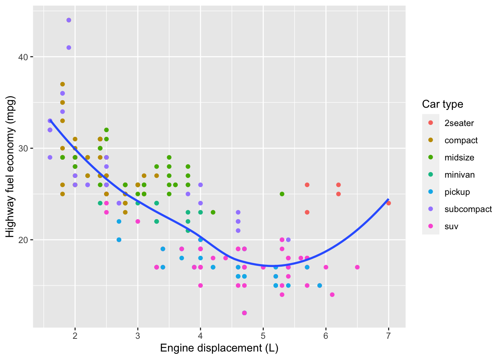
here labs() serves to change the axis and legend titles. It helps understand more clearly what the axis represent.
df <- tibble(
x = runif(10),
y = runif(10)
)
ggplot(df, aes(x, y)) +
geom_point() +
labs(
x = quote(sum(x[i] ^ 2, i == 1, n)),
y = quote(alpha + beta + frac(delta, theta))
)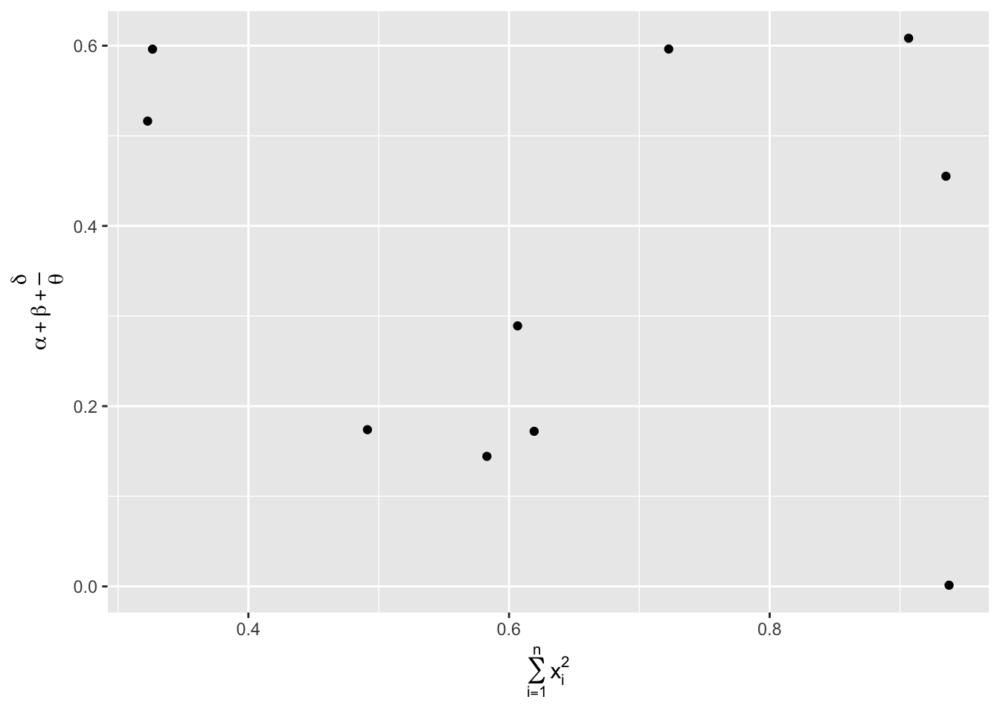
When needed we can use mathematical equations instead of text.
Annotations
best_in_class <- mpg %>%
group_by(class) %>%
filter(row_number(desc(hwy)) == 1)
ggplot(mpg, aes(displ, hwy)) +
geom_point(aes(colour = class)) +
geom_text(aes(label = model), data = best_in_class)
We can have labels inside the plot for specific observations. geom_text with the label aesthetic is what adds text to a point.
ggplot(mpg, aes(displ, hwy)) +
geom_point(aes(colour = class)) +
geom_label(aes(label = model), data = best_in_class, nudge_y = 2, alpha = 0.5)
Here we changed geom_text to geom_label which draws a rectangle around the text, and nudge_y moves the labels slightly above the corresponding point (the greater nudge_y is the higher above the point the label will be). However, some of them still overlap. alpha = changes the transparency of our labels, if we increase ist (ex to 2) our labels won’t be transparent and we won’t be able to see any points etc behind them, the lower the alpha value the more transparent our labels are.
install.packages(“ggrepel”) — I had to install the package before being able to use for the first time.
library(ggrepel)
ggplot(mpg, aes(displ, hwy)) +
geom_point(aes(colour = class)) +
geom_point(size = 3, shape = 1, data = best_in_class) +
ggrepel::geom_label_repel(aes(label = model), data = best_in_class)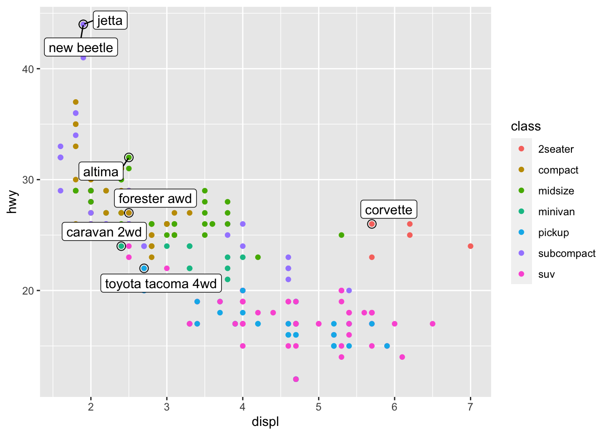
the ggrepel package automaticially adjusts the labels so that they don’t overlap. The third line of the code geom_point(size=3, shape=1, data = best_in_class) created a second layer of large hollow points (the black outline that we see around the labelled points).
class_avg <- mpg %>%
group_by(class) %>%
summarise(
displ = median(displ),
hwy = median(hwy)
)summarise() ungrouping output (override with .groups argument)
ggplot(mpg, aes(displ, hwy, colour = class)) +
ggrepel::geom_label_repel(aes(label = class),
data = class_avg,
size = 6,
label.size = 0,
segment.color = NA
) +
geom_point() +
theme(legend.position = "none")ggrrepel::geom_label_repel(aes(label=class)) etc. is what replaces the legend with labels on the plot, and theme(legend.position = "none) is what turns the legend off.
label <- mpg %>%
summarise(
displ = max(displ),
hwy = max(hwy),
label = "Increasing engine size is \nrelated to decreasing fuel economy."
)The top part of the code allows us to create a single label, and here we are naming it. Using summarise() is also useful because we can compute the max of x and y to help us place the label in the corner.
ggplot(mpg, aes(displ, hwy)) +
geom_point() +
geom_text(aes(label = label), data = label, vjust = "top", hjust = "right")
This part of the code is where we write where we want the label to be placed. There are nine different combinations that we can use to control the alignment of the label, by changing hjust = and vjust= to ‘left’, ‘center’ and ‘right’.
label <- tibble(
displ = Inf,
hwy = Inf,
label = "Increasing engine size is \nrelated to decreasing fuel economy."
)By changing displ = max(displ) and hwy = max(hwy) to displ = Inf, and hwy = Inf the label will be placed exactly in the corner of the plot. also breaks up the line, and we can place it whereever we want within the text.
ggplot(mpg, aes(displ, hwy)) +
geom_point() +
geom_text(aes(label = label), data = label, vjust = "top", hjust = "right")"Increasing engine size is related to decreasing fuel economy." %>%
stringr::str_wrap(width = 40) %>%
writeLines()## Increasing engine size is related to
## decreasing fuel economy.Increasing engine size is related to decreasing fuel economy. This is another way to break up the lines, where (width=40) represented the number of characters we want per line.
Scales
ggplot(mpg, aes(displ, hwy)) +
geom_point(aes(colour = class)) +
scale_x_continuous() +
scale_y_continuous() +
scale_colour_discrete()
This is the default scale that ggplot2 uses but we can change the parameters according to our data.
ggplot(mpg, aes(displ, hwy)) +
geom_point() +
scale_y_continuous(breaks = seq(15, 40, by = 5))
The last line of the code indicates that we want to adjust the scale of the y-axis, (breaks) lets us override the default scale. seq(15, 40, by =5) means that we want the y-axis to start at 15, end at 40 and increase in increments of 5.
ggplot(mpg, aes(displ, hwy)) +
geom_point() +
scale_x_continuous(labels = NULL) +
scale_y_continuous(labels = NULL)
Setting labels=NULL suppresses all of the labels.
presidential %>%
mutate(id = 33 + row_number()) %>%
ggplot(aes(start, id)) +
geom_point() +
geom_segment(aes(xend = end, yend = id)) +
scale_x_date(NULL, breaks = presidential$start, date_labels = "'%y")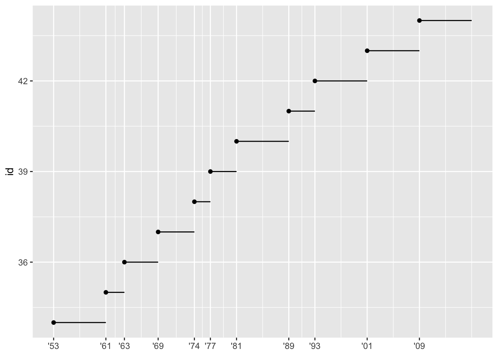
Brakes can also be used to highlight where observations occur.
Changing the layout of the legend
base <- ggplot(mpg, aes(displ, hwy)) +
geom_point(aes(colour = class))
base + theme(legend.position = "left")
base + theme(legend.position = “left”) base + theme(legend.position = “top”) base + theme(legend.position = “bottom”) base + theme(legend.position = “right”) # the default Theme(legend.position = “left”) means that the legend will be on the left of the plot, but we can change “left” to top, bottom, or right.
ggplot(mpg, aes(displ, hwy)) +
geom_point(aes(colour = class)) +
geom_smooth(se = FALSE) +
theme(legend.position = "bottom") +
guides(colour = guide_legend(nrow = 1, override.aes = list(size = 4)))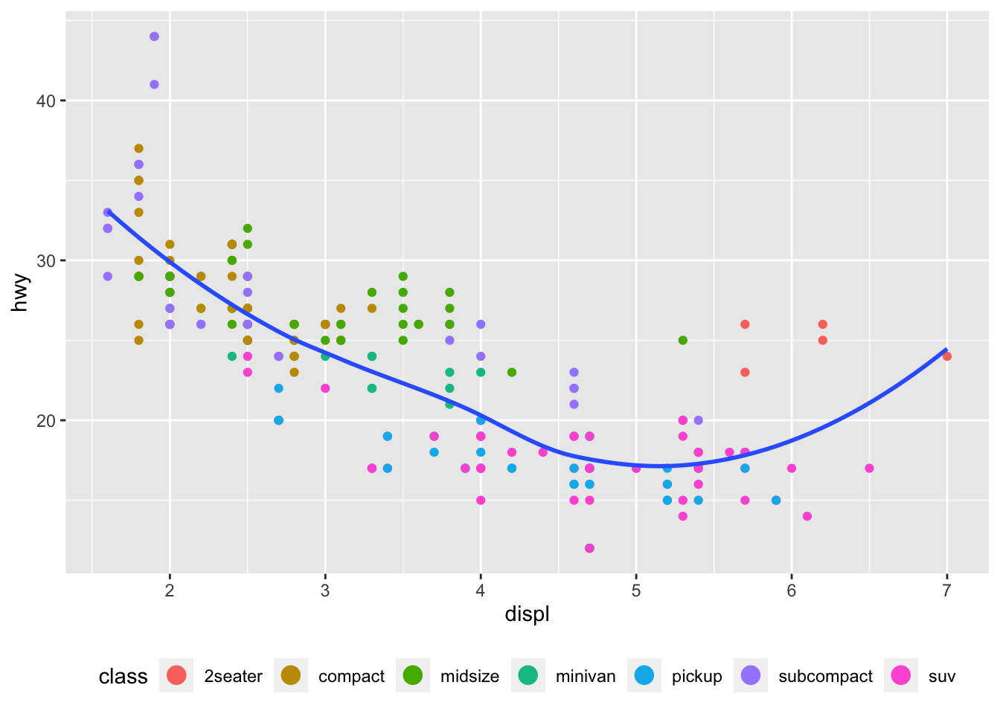
The last line of the code indicates that we only want the legend to use 1 row (nrow = 1) and that the points in the legend should be larger than that in the plot (override.aes = list(size=4)) – which overrides the previous aesthetics.
ggplot(diamonds, aes(carat, price)) +
geom_bin2d()
This is the original plot of the variables that we transformed below using log.
ggplot(diamonds, aes(log10(carat), log10(price))) +
geom_bin2d()
This is the transformed plot of the relationship between carat and price. Log transformation was perforomed on carat, shown by (log10(carat), and log was performed on price as shown by log10(price). This helps us see the relationship more clearly.
ggplot(diamonds, aes(carat, price)) +
geom_bin2d() +
scale_x_log10() +
scale_y_log10()
This continues to be a plot of the log transformation but aes(carat, price) allows the axes to be labeled with their original names. But now with scale_x_log10 the scale of the x-axis is being transformed, and the same with the y-axis.
ggplot(mpg, aes(displ, hwy)) +
geom_point(aes(color = drv)) +
scale_colour_brewer(palette = "Set1")
We can choose the color palette we want to use in our plot - which is what the last line of the code does. The shades used are very different from one another.
ggplot(mpg, aes(displ, hwy)) +
geom_point(aes(color = drv, shape = drv)) +
scale_colour_brewer(palette = "Set1")
The second line of the code (aes(color = drv, shape = drv)) means that every unique value is being a color and a shape.
presidential %>%
mutate(id = 33 + row_number()) %>%
ggplot(aes(start, id, colour = party)) +
geom_point() +
geom_segment(aes(xend = end, yend = id)) +
scale_colour_manual(values = c(Republican = "red", Democratic = "blue"))
scale_color_manual allows us map specific colors and values. For example, here we can map “red” to Republican and “blue” to Democratic.
df <- tibble(
x = rnorm(10000),
y = rnorm(10000)
)
ggplot(df, aes(x, y)) +
geom_hex() +
coord_fixed()geom_hex() gives us a plot with hexagon points, and we get a plot with a color gradient.
install.packages(“viridis”) – installed the package viridis to be able to create the vignette.
ggplot(df, aes(x, y)) +
geom_hex() +
viridis::scale_fill_viridis() +
coord_fixed()By using the viridis package the vignette changes color, rather than being a gradient of a single color.
Zooming
ggplot(mpg, mapping = aes(displ, hwy)) +
geom_point(aes(color = class)) +
geom_smooth() +
coord_cartesian(xlim = c(5, 7), ylim = c(10, 30))
The last line of the code allows us to zoom into the plot. xlim = c(5,7) zooms into the points between the values of 5 and 7 on the x-axis. ylim = c(10,30) zooms into the points between 10 and 30 on the y-axis.
mpg %>%
filter(displ >= 5, displ <= 7, hwy >= 10, hwy <= 30) %>%
ggplot(aes(displ, hwy)) +
geom_point(aes(color = class)) +
geom_smooth()In this plot we have also changed the limits but the line isn’t as smooth as it could be and makes if difficult to interpret patterns.
suv <- mpg %>% filter(class == "suv")
compact <- mpg %>% filter(class == "compact")
ggplot(suv, aes(displ, hwy, colour = drv)) +
geom_point()
ggplot(compact, aes(displ, hwy, colour = drv)) +
geom_point()Here we plotted two classes of cars separately and an issue with this is that it becomes difficult to compare the plots because they are all using different scales.
x_scale <- scale_x_continuous(limits = range(mpg$displ))
y_scale <- scale_y_continuous(limits = range(mpg$hwy))
col_scale <- scale_colour_discrete(limits = unique(mpg$drv))
ggplot(suv, aes(displ, hwy, colour = drv)) +
geom_point() +
x_scale +
y_scale +
col_scaleggplot(compact, aes(displ, hwy, colour = drv)) +
geom_point() +
x_scale +
y_scale +
col_scale
This creates scales that are shared by multiple plots, which means it will be easier to interpret the plots and compare them.
ggplot(mpg, aes(displ, hwy)) +
geom_point(aes(color = class)) +
geom_smooth(se = FALSE) +
theme_bw()
The last line of the code customizes the theme of our plot. We can change whether we want grid lines or not, along with the gray-scale of our plot.
ggsave("my-plot.pdf")This simply saves our plot as a pdf to the disk drive.
Final Project
Eliza Epstein, Hanzhao Kuang, Carolina Herrera Figueroa, Carmen Harrison Montoya
December 5, 2021
Crim 250 Final Project
Homicide Research
The following paper explores the process of analyzing homicide data within the US. Initially, the research question was “Is there a correlation between the perpetrator’s gender and whether the homicide was considered justifiable within the last five years.” Before delving into the motivation behind this question, it is important to note that while the project started here, it took a detour. There were many issues with the data set used, so eventually it was determined that with the time and resources at hand, we would not be able to answer this question. That said, the overarching theme of homicide research was maintained. However, we deviated from the relationship between gender and justifiable homicides to weapons used by states. We landed on the question “Are there differences in Weapon Type Used in homicides in Northern vs Southern States?” While on the surface these topics seem unrelated, they fall under the same general motivating theme of flaws within the homicide rates in the US.
The motivation to analyze the initial relationship between gender and justifiable homicides came from the fact that many research studies have shown that males are more impulsive than females, and commit more homicides overall. Thus, our hypothesis was that for citizens, justifiable homicides would be committed more by women. For police officers, on the other hand, males would be committing more justifiable homicides - considering that the majority of police officers are male.
The initial research design was to test if there were differences in gender for justifiable and non-justifiable murders. That said, when conducting the analysis, it became clear that given the time and resources available, it would not be a feasible study. The data file was extremely large, with many empty cells. Without the skillset to “clean” the data file in R, the plots were impossible to analyze.
The initial data set used had many empty cells. Even though it was attempted to exclude these, as learned in class, it ultimately would not allow us to make the desired bar plot excluding the leftmost bar which skewed the size of the rest. While the seven other bars on the stacked bar plot do have useful information, it was decided that it would not be possible to clean the dataset in the time available. Additionally, with the empty cells throughout the entire data set, the t-tests run were not useful.
That said, after extensive efforts to make the question work, it was ultimately decided that we should work with a new data set. In exploring themes under the same overarching idea of imbalances in homicide rates, we elected to focus on weapons used by state. While it is known that citizens in the south are more likely to own firearms, the question we wanted to study was whether there was a significant difference in weapon type used in homicides in Northern vs Southern states.
The motivation for this data analysis stemmed from the ongoing issues regarding gun homicides in the US. While access to guns is a federal issue, each state has their own laws regarding firearms. In 2019 there were a total of 39, 707 total deaths from firearms in the US. Further, in 2018 firearms were responsible for about 75% of homicides in the US. It has been estimated that about 31% of households in the US possess firearms and about 22% of adults own at least one firearm. The hypothesis for our study was that southern states will have significantly higher rates of firearms used in homicides. The null hypothesis is therefore that there will be no difference between northern and southern states in levels of firearms used in homicides.
The dataset used to analyze this question is part of the FBI’s Uniform Crime Report of 2019, for which law enforcement agencies throughout the United States provide summary reports on Part I offenses (which include criminal homicide, arson and assault) . This is voluntary and counties are not obligated to send any reports to the FBI. This survey covers 93% of the population, and only reports on crimes that are known to the police. The team specifically focused on Table 20 of the report, which looks at murder by state and types of weapons. It is important to note that Alabama and Florida are excluded from our analysis because the data for these was extremely limited. Alaska, Hawaii and the Virgin Islands were also excluded because they are not considered a part of the North or South.
We decided to create maps based on the weapons used in homicides for each state. These maps simply show the number of a certain type of weapon used in every state. For example, the map below shows the number of handgunds that were used in homicides in each state. On the map, California is depicted with the lightest shade of blue, indicating a very high number of handguns used in homicides relative to other states. 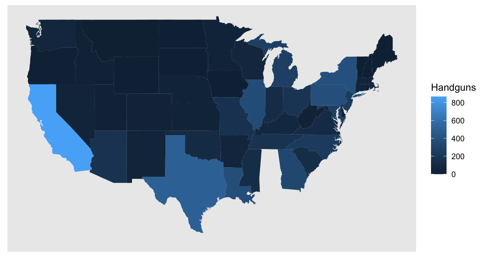
The map below shows the number of rifles used in homicides in each state.

This map (below) instead shows the number of shotguns used in homicides. For this specific type of weapon we can see that California and Texas are very similar.

Next, we created a map using a binary of “North” vs “South” states based on the distinctions made by the census bureau. 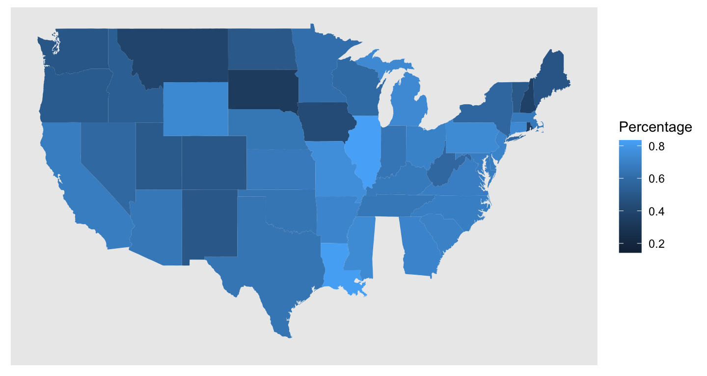
We then created a bar chart showing the number of states in each region to visually express that in the distribution of states more are classified as being Northern States than Southern States.

Lastly, we conducted our data analysis, where our results demonstrated a significant p-value allowing us to reject the null hypothesis and a significant coefficient estimate for a difference between North and South numbers of firearm deaths (NVS1).
##
## Call:
## lm(formula = Percentage ~ NVS, data = dat.weapon)
##
## Residuals:
## Min 1Q Median 3Q Max
## -0.43292 -0.07577 -0.00084 0.08786 0.25830
##
## Coefficients:
## Estimate Std. Error t value Pr(>|t|)
## (Intercept) 0.57577 0.02153 26.748 < 2e-16 ***
## NVS1 0.11464 0.04179 2.743 0.00859 **
## ---
## Signif. codes: 0 '***' 0.001 '**' 0.01 '*' 0.05 '.' 0.1 ' ' 1
##
## Residual standard error: 0.1292 on 47 degrees of freedom
## Multiple R-squared: 0.138, Adjusted R-squared: 0.1197
## F-statistic: 7.524 on 1 and 47 DF, p-value: 0.008588Beyond this, we conducted a regression analysis to further solidify our hypothesis, show that the four assumptions are satisfied to reject the null hypothesis, and reinforce our analysis by taking into account our missing data and the inequality in the number of north and south states.
Before our assumptions, the goodness of fit of our graph is satisfied through our Residuals vs. X line (with Washington DC as the lower outlier) and Residuals vs. Fitted (with DC again as outlier).

The assumption of independence between observations is also satisfied as shown by the Residuals vs X plot.
The assumption of homoscedasticity is satisfied through our Scale-Location Plot, despite a slight skew downwards as the fitted values grow larger.

The assumption of normality is mostly satisfied through the linearity of our Normal Q-Q plot since there are some light tails between -2 and -1, and 1 and 2.
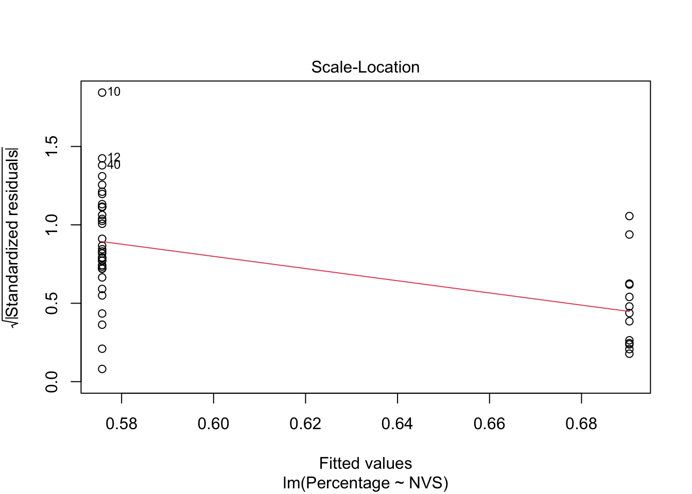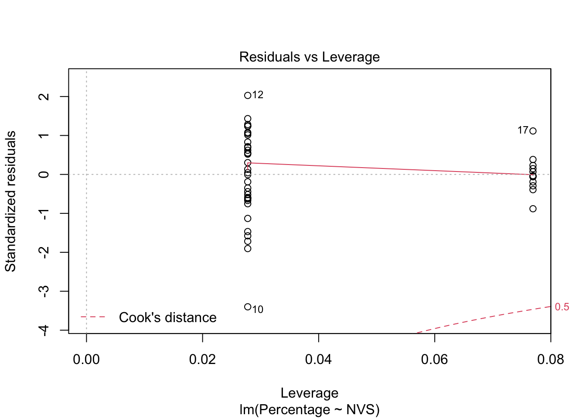
Lastly, the assumption of linearity is satisfied through the residuals vs x plot.
In order to counter our missing data of Alabama and Florida, while also taking into account more northern states than southern states, we conducted two side-by-side histograms for comparison while also using the Welch Two-Sample T-Test. Within both the histograms and the t-test, we are able to reject the null hypothesis by using the significance level of our p-value.


##
## Welch Two Sample t-test
##
## data: Percentage by NVS
## t = -3.9524, df = 46.572, p-value = 0.0002611
## alternative hypothesis: true difference in means between group 0 and group 1 is not equal to 0
## 95 percent confidence interval:
## -0.17300023 -0.05627267
## sample estimates:
## mean in group 0 mean in group 1
## 0.5757728 0.6904093Overall, through the significance of our p-values, our coefficient estimate detailing a difference between North and South state firearm deaths, and our ability to reject the null hypothesis, our hypothesis stands true. Thus, there is a significant difference between firearm deaths in states identified as North and South. In summary, Southern states had much higher numbers of homicide by firearm in 2019. Due to higher gun ownership and less stringent firearm laws within Southern states, these states are much more likely to commit homicides by varying types of firearms.
Whether it be due to state firearm laws, personal and social beliefs around firearms, the state’s political landscape, or another factor, confounds may also affect our conclusion. As portrayed through our DAG, the location of the state (whether in the North or South) should thus affect gun laws, which would then affect the weapon type used in homicides within the state. However, another path that can be considered is the location of the state, which affects how individuals feel socially and politically about guns, thus affecting the weapon used in homicides within the state. Nonetheless, political and social perspectives of firearms may also be wrapped into the reasoning for more stringent or relaxed gun laws, and thus, these confounds do not truly alter our hypothesis or perceived outcome. Below, we demonstrate our DAG.

Homicide and Weapon Type DAG
Returning to our initial hypothesis, issues in data analysis rendered us incapable of studying our research question within the given timeframe and within our limited access to the data. Due to missing chunks of data, issues in processing through R, and a constrained time frame to examine large amounts of data, we were unable to complete the study of our first hypothesis. Through these limitations, we were able to better understand the research process overall. Through confounds in data, analysis, and time, a researcher must be able to adapt their hypothesis and their study to the times. Within our project, we were able to rework our question to further understand a current large concern within the United States: the correlation between firearm ownership, state firearm laws, and state homicides by firearm. In doing so, we learned that there is truly a correlation between Southern states, with relaxed gun laws and increased ownership, and firearm deaths.
Now, beyond the outcomes of the data analysis, this project taught us valuable lessons about the research process. Oftentimes researchers have questions that they are motivated to answer yet the data is either unavailable or cannot be readily used. This project leads to the motivation of future research. With more time and resources, it would be interesting to delve into the original research question. Further, it could be thought provoking to combine the two questions and analyze if there are gender differences in the weapons used for homicides in the US.